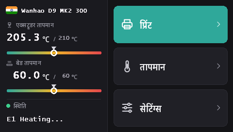

Duplicator 9 की टचस्क्रीन फ़्लैश करना
MK1 से MK3 तक हर D9 में एक ही DWIN T5 टचस्क्रीन (480 × 272) है। इन फ़र्मवेयर के साथ उस पर DGUS Reloaded 2.0 चलता है, 16 भाषाओं वाला हमारा नया इंटरफ़ेस, जो microSD कार्ड से फ़्लैश होता है।
DWIN_SET.zip डाउनलोड करें (DGUS Reloaded 2.0)
DGUS Reloaded 2.0 में क्या मिलता है
- 16 भाषाएँ: English, Français, Deutsch, Español, Italiano, Português, Nederlands, Polski, Türkçe, Русский, العربية, हिन्दी, 中文, 日本語, 한국어, Bahasa Indonesia। भाषा बदलने के लिए होम स्क्रीन पर प्रिंटर के नाम के पास वाले झंडे पर टैप करें; प्रिंटर आपकी पसंद याद रखता है।
- फिलामेंट सेंसर पेज: सेटिंग्स → फिलामेंट → फिलामेंट सेंसर। देखें फिलामेंट सेंसर।
- स्टेटस लाइन जो बनी रहती है: आख़िरी मैसेज, जैसे Ready, 30 सेकंड बाद ग़ायब होने के बजाय स्क्रीन पर बना रहता है।
- नोज़ल और बेड के लिए तापमान गेज, जिन पर टारगेट तापमान का निशान है।
- हर पेज का नया रूप: डार्क थीम, बड़े बटन, पॉपअप पर चित्र-संकेत।

1. microSD कार्ड फ़ॉर्मैट करें
- Windows: Windows 11 अक्सर FAT32 में फ़ॉर्मैट नहीं करता; GUIFormat इस्तेमाल करें और एलोकेशन यूनिट साइज़ 4096 रखें।
- Linux:
sudo mkfs.fat -F 32 -s 8 /dev/sdX1(पहलेlsblkसे डिवाइस जाँच लें)। - macOS:
sudo newfs_msdos -F 32 -c 8 /dev/diskN(diskutil listसे जाँचें)।
2. फ़ाइलें कॉपी करें
DWIN_SET.zip को अनज़िप करें और पूरा DWIN_SET फ़ोल्डर कार्ड के रूट में कॉपी करें।
3. फ़्लैश करें
- प्रिंटर बंद करें और उसका प्लग निकाल दें।
- स्क्रीन के पिछले हिस्से तक पहुँचने के लिए बेस का आगे वाला हिस्सा खोलें, वहीं स्क्रीन का microSD स्लॉट है।
- कार्ड लगाएँ और प्रिंटर चालू करें। 10 से 30 सेकंड में स्क्रीन पर अपडेट दिखने लगता है; स्क्रीन के सामान्य रूप से दोबारा शुरू होने तक रुकें, कुल मिलाकर 1 से 3 मिनट।
- प्रिंटर बंद करें, कार्ड निकालें, बेस बंद करें।
Wanhao के D9 स्क्रीन अपडेट वाले वीडियो में दिखता है कि स्लॉट कहाँ है।
यह कहाँ से आया
DGUS Reloaded 2.0, DGUS Reloaded 1.0.3 (Desuuuu का, फिर Neo2003 का) को पेज-दर-पेज नए सिरे से बनाता है। इसका सोर्स, स्क्रीन फ़ाइलें बनाने वाला प्रोग्राम और अनुवाद GitHub पर हैं। आपकी भाषा में कोई शब्द ग़लत या अटपटा है? हमें Discord पर बताएँ या वहाँ issue खोलें।
DGUS Reloaded 1.0.3 पर वापस जाने के लिए, जैसे v2.0.9 से पुराने फ़र्मवेयर के साथ, DWIN_SET_1.0.3.zip को इसी तरह फ़्लैश करें।
Wanhao की स्क्रीन पर वापस जाना
Wanhao का स्क्रीन फ़र्मवेयर सिर्फ़ Wanhao के मदरबोर्ड फ़र्मवेयर के साथ काम करता है। MK1: MK1 पेज पर उसी वर्ज़न की स्क्रीन फ़ाइल। MK1 + किट, MK2 और MK3: DWIN_SET_MK2.zip। तरीका वही है।